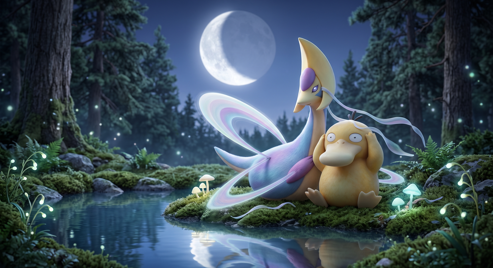

Quando comecei a procurar um Pokémon para representar isto tudo, havia escolhas mais óbvias.
Pikachu seria reconhecido por toda a gente.
Charizard ficava bem num logótipo.
Mewtwo dava imediatamente a impressão de que tínhamos orçamento.
Psyduck, convenhamos, representava bastante bem o departamento administrativo.
Mas havia Cresselia.
E quanto mais fui ver, pior ficou.
No bom sentido.
Porque Cresselia não é particularmente interessante pelo que destrói.
É interessante pelo que deixa melhor.

01 — A farmácia que passa a voar
A Pokédex descreve Cresselia a atravessar o céu libertando partículas brilhantes das suas asas em forma de véu. Representa a lua crescente.
Já seria suficiente para justificar o logótipo.
Depois aparecem as penas.
A Lunar Feather — chamada Lunar Wing noutras traduções e contextos — é descrita como uma pena que brilha como a lua e possui o poder de dissipar pesadelos.
Categoria: Lunar Pokémon
Peso: 85,6 kg
Especialidade aparente: manutenção nocturna
Modelo de negócio: inexistente
Portanto, tecnicamente, estamos perante uma espécie de farmácia nocturna de 85,6 kg que não precisa de receita médica.
Não tem balcão.
Não aceita Multibanco.
Passa.
Brilha.
Deixa uma pena.
Boa noite.
02 — O caso da criança que não acordava
E depois fui ver o que acontece em Sinnoh.
Não devia ter ido ver Sinnoh.
Em Canalave City, o filho de um marinheiro está preso num pesadelo do qual ninguém o consegue acordar.
Não há uma cidade a explodir.
Não há uma profecia.
Não é preciso reunir oito pedras cósmicas e impedir o fim do universo.
O pai só quer o filho de volta.
O caminho leva a Fullmoon Island.
Encontramos Cresselia. Ela parte. E no lugar onde estava fica uma Lunar Feather.
Levamo-la de volta ao rapaz.
A pena faz o que devia fazer.
Ele acorda.
É tudo.
Nenhum lendário foi derrotado.
Uma criança deixou de ter medo enquanto dormia.
03 — Do outro lado da água
Fullmoon Island tem uma contraparte: Newmoon Island, associada a Darkrai.
É tentador arrumar a coisa como Bem contra Mal e ir almoçar.
Mas Pokémon nem sempre é assim tão simples, e as diferentes continuidades não tratam Cresselia e Darkrai exactamente da mesma forma.
Gosto mais da imagem pequena.
Algures no escuro há uma coisa capaz de estragar uma noite.
E algures do outro lado existe outra capaz de ajudar a pô-la novamente no sítio.
Não mata o monstro debaixo da cama.
Acende uma luz suficientemente boa para conseguires voltar a dormir.
04 — E então descobri Lunar Dance
Foi aqui que a escolha deixou de ser apenas estética.
Cresselia aprende Lunar Dance.
Quando o usa, Cresselia desmaia. O Pokémon que entra depois pode recuperar completamente o HP e o PP e ficar livre de problemas de estado.
Tradução emocional não reconhecida pela Pokémon League
“Eu fico por aqui. Tu continua.”
Há Pokémon cujo grande momento consiste em lançar meteoritos.
Cresselia tem um em que sai de cena para deixar outra pessoa inteira.
Ela é o Pokémon que aparece depois.
05 — Portanto, porquê Cresselia?
Não foi por ser a mais forte.
Não foi porque fosse a carta mais cara.
Nem sequer foi porque tivesse percebido isto tudo quando a escolhi.
Primeiro gostei dela.
Depois fui investigar.
E descobri que tinha escolhido um Pokémon cuja mitologia parece construída em volta de uma ideia muito simples:
há coisas que passam pelo mundo e deixam dano atrás delas.
Cresselia passa e deixa luz.
Uma pena.
Um sonho melhor.
Às vezes alguém acorda.
E acho que isto encaixa bastante bem num sítio chamado Smilecollector.
Estamos todos aqui a coleccionar pedaços de cartão.
Convém que pelo menos alguns deixem qualquer coisa boa quando passam.
COISAS QUE FUI CONFIRMAR DEPOIS
- Pokémon.com — Cresselia Pokédex: Lunar Pokémon; partículas brilhantes ao voar; associação à lua crescente.
- Bulbapedia — Lunar Feather: a pena lunar e o poder de dissipar pesadelos.
- Bulbapedia — Fullmoon Island: o episódio do filho de Sailor Eldritch e a relação geográfica com Newmoon Island.
- Bulbapedia — Lunar Dance: Cresselia sai do combate para restaurar o Pokémon que entra depois.
Canon confirmado em silêncio. A leitura emocional é nossa. Como deve ser.